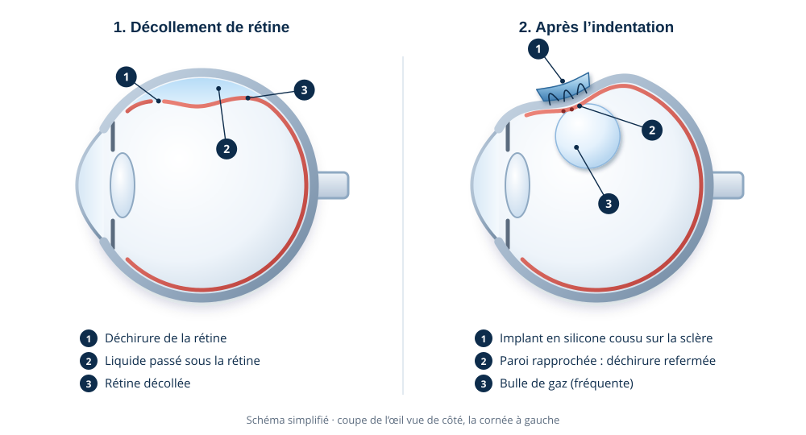

Qu’est-ce que l’indentation ?
L’indentation, aussi appelée chirurgie par voie externe, est l’une des deux grandes techniques de chirurgie du décollement de rétine, avec la vitrectomie. Elle agit depuis l’extérieur de l’œil, sans retirer le vitré.
Le chirurgien repère toutes les déchirures de la rétine, les traite par le froid (cryothérapie) pour créer une cicatrice solide, puis coud sur la sclère, le blanc de l’œil, un petit implant en silicone. Cet implant crée un léger relief vers l’intérieur de l’œil, qui rapproche la paroi de la déchirure et la referme. Selon les cas, le liquide présent sous la rétine est évacué, et une bulle de gaz est souvent injectée dans l’œil pour appuyer la rétine pendant la cicatrisation. Lorsque l’implant fait le tour complet de l’œil, on parle de cerclage.

Cette technique tient une place centrale dans l’enseignement du Dr Didier Ducournau et du Dr Jean-Paul Amar, fondateurs de la Société de Chirurgie Rétino-Vitréenne (SCRV), dont s’inspire la pratique du cabinet. Au cabinet, l’indentation est utilisée dans plus de la moitié des décollements de rétine, lorsque le décollement s’y prête.
Ce que montre l’étude SCRV 2026
La SCRV a analysé 2 215 décollements de rétine opérés en première intention par 39 chirurgiens. Les résultats ont été présentés en novembre 2026.
| Type de décollement | Indentation seule | Vitrectomie seule |
|---|---|---|
| Décollements sans signe imposant une vitrectomie (1 789) | 2,6 % | 9,8 % |
| Décollements par trou atrophique ou désinsertion (306) | 1,3 % | 11,2 % |
| Déchirures petites ou de taille habituelle (1 213) | 3,9 % | 7,5 % |
Dans les décollements sans signe imposant une vitrectomie, le risque d’échec était donc près de quatre fois plus faible après indentation, et près de neuf fois plus faible dans les décollements par trou atrophique ou désinsertion. Lorsque l’opération avait réussi, l’acuité visuelle finale moyenne était aussi meilleure après indentation (7,7 / 10 contre 6,4 / 10). Les complications pendant l’opération étaient moins fréquentes (1,6 % contre 5,1 %).
Il s’agit d’une étude rétrospective : malgré l’exclusion des décollements les plus graves, le choix de la technique a pu dépendre de critères non mesurés. Ces résultats éclairent la décision du chirurgien sans la remplacer.
Pour quels décollements ?
L’indentation convient particulièrement aux décollements dont toutes les déchirures sont bien visibles et situées en périphérie : décollements par trou atrophique, par désinsertion (dialyse), déchirures de taille habituelle, notamment chez les patients jeunes et chez ceux qui n’ont pas été opérés de la cataracte. La vitrectomie accélère en effet l’apparition de la cataracte, ce que l’indentation évite.
La vitrectomie reste en revanche nécessaire dans de nombreuses situations, où elle est la meilleure technique :
- hémorragie du vitré ou opacités empêchant de voir la rétine ;
- déchirure géante, déchirure située près de la macula, trou maculaire ;
- prolifération vitréo-rétinienne avancée (rétine rétractée) ;
- membrane épirétinienne associée, hypotonie, décollement de la choroïde ;
- déchirures introuvables avant l’opération.
Les deux techniques peuvent aussi être associées. Le choix se fait après l’examen, au cas par cas, et il est expliqué au patient.
Inconvénients et risques
Comme toute chirurgie, l’indentation a ses inconvénients, qu’il est important de connaître :
- Suites plus inconfortables qu’après une vitrectomie : douleurs, paupières gonflées et œil rouge pendant quelques jours.
- Myopie induite : l’implant peut allonger légèrement l’œil, ce qui impose parfois de changer de lunettes.
- Vision double passagère, rarement durable.
- Plus rarement, infection ou extériorisation de l’implant, qui doit alors être retiré.
Aucune technique ne réussit dans tous les cas : une nouvelle intervention est parfois nécessaire.
Après l’opération
L’intervention se fait le plus souvent en ambulatoire. Vous mettrez des collyres selon l’ordonnance remise à la sortie. Lorsqu’une bulle de gaz a été injectée, ce qui est fréquent, les consignes sont les mêmes qu’après une vitrectomie : position de la tête indiquée par votre chirurgien et avion interdit tant que la bulle est présente. Pendant une quinzaine de jours, évitez les efforts violents, la piscine et toute source d’infection.
Questions fréquentes
Quelle est la différence entre indentation et vitrectomie ?
L’indentation agit par l’extérieur de l’œil : un petit implant en silicone est cousu sur la sclère pour rapprocher la paroi de l’œil de la déchirure, sans retirer le vitré. La vitrectomie agit par l’intérieur : le chirurgien retire le vitré et réapplique la rétine, le plus souvent avec une bulle de gaz. Les deux techniques peuvent être associées.
Quelle technique pour opérer un décollement de rétine ?
Le chirurgien choisit selon le décollement : nombre et position des déchirures, transparence de l’œil, présence d’une hémorragie, d’un trou maculaire ou d’une prolifération vitréo-rétinienne. Dans l’étude SCRV présentée en 2026 (2 215 décollements de rétine), les décollements sans signe imposant une vitrectomie avaient un taux d’échec de 2,6 % après indentation seule contre 9,8 % après vitrectomie seule, et de 1,3 % contre 11,2 % dans les décollements par trou atrophique ou désinsertion.
L’indentation est-elle douloureuse ?
L’opération se fait sous anesthésie et n’est pas douloureuse. Les suites sont en revanche souvent plus inconfortables qu’après une vitrectomie : douleurs, paupières gonflées et œil rouge pendant quelques jours. Elles sont soulagées par les antalgiques prescrits.
Faut-il garder une position de la tête après une indentation ?
Une bulle de gaz est souvent injectée lors d’une indentation. Dans ce cas, votre chirurgien vous indiquera la position de la tête à respecter les premiers jours.
Peut-on prendre l’avion après une indentation ?
Pas tant qu’une bulle de gaz est présente dans l’œil, ce qui est fréquent après une indentation. Votre chirurgien vous dira quand cette restriction est levée.
L’implant d’indentation reste-t-il dans l’œil ?
Oui, il est le plus souvent laissé en place définitivement. Il est invisible et ne se sent pas. Rarement, il doit être retiré, par exemple s’il s’infecte ou s’il devient apparent sous la conjonctive.
Faut-il retarder l’opération pour choisir la technique ?
Non. Le décollement de rétine est une urgence : chaque jour compte, surtout lorsque la macula est encore à plat. Les deux techniques sont efficaces ; c’est l’examen par le chirurgien qui détermine la plus adaptée.
Information générale : elle ne remplace pas l'examen et l'avis de votre ophtalmologiste.